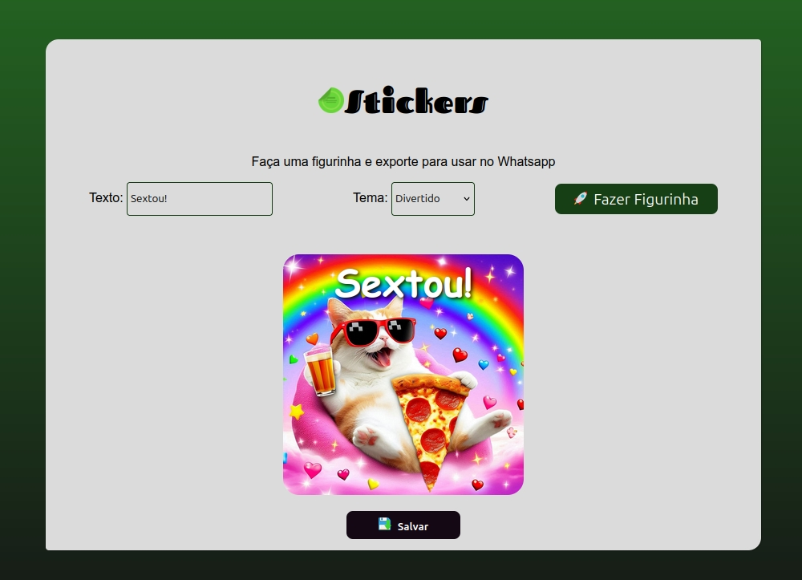

Figurinhas
Gerador de figurinhas personalizadas para Whatsapp, com opção de salvar no dispositivo.
Foco: Manipulação de DOM, CSS e bibliotecas externas.
Olá! Sou o Bruno Simon, um entusiasta da tecnologia trilhando o caminho do desenvolvimento WEB.
Minha jornada começou na arte, atuando como Designer Gráfico e Ilustrador. Hoje, trago essa bagagem visual para o Front-end, criando interfaces agregando valor.
Atualmente, sou aluno do curso de Engenharia de Software. Meu foco é me tornar um Fullstack completo, dominando o universo Javascript (React, Node.js) e bancos de dados.
Também desenvolvo soluções ágeis utilizando WordPress para gerenciamento de conteúdo.

Gerador de figurinhas personalizadas para Whatsapp, com opção de salvar no dispositivo.
Foco: Manipulação de DOM, CSS e bibliotecas externas.
Relógio com interface dinâmica que muda a saudação e o fundo conforme o horário.
Foco: Condicionais JS e estilização dinâmica.
Consulte o clima em tempo real de qualquer cidade do mundo.
Foco: Consumo de API (Fetch) e assincronismo.
O clássico Pedra, Papel e Tesoura contra a máquina com resultados aleatórios.
Foco: Lógica de jogo e interatividade.
Gerenciador de lista interativa (CRUD simples) com temática de gatos.
Foco: Manipulação de Arrays e eventos.
Lista interativa para gerenciar nomes, similar ao myCATS.
Foco: Reforço de lógica de manipulação de listas.
Gerador e gerenciador de números para loterias (Mega-Sena, Quina, etc) com salvamento local.
Foco: LocalStorage, funções modulares e lógica avançada.
Portal de notícias tech. Um case de implementação rápida com Wordpress.
Foco: Gerenciamento de CMS e temas customizados.